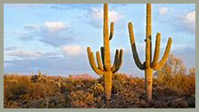
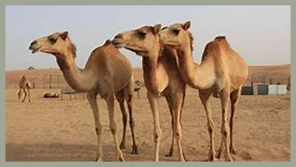
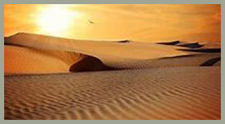
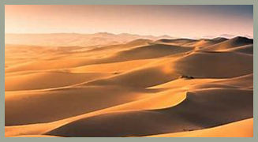

DESERTOS
Vegetação
A vegetação do deserto é bastante limitada devido à escassez de água. As plantas que vivem nesse ambiente desenvolveram adaptações para sobreviver ao clima seco, como raízes profundas, folhas pequenas ou transformadas em espinhos e caules que armazenam água. Entre as espécies mais comuns estão os cactos e alguns tipos de arbustos resistentes à seca.
Fauna
A fauna do deserto é composta por animais que conseguem suportar temperaturas extremas e a falta de água. Muitos deles são noturnos, o que ajuda a evitar o calor do dia. Entre os principais animais encontrados nesse bioma estão os camelos, lagartos, cobras, escorpiões, roedores e algumas aves, todos com características que ajudam na conservação da água e na regulação da temperatura corporal.
Clima
O clima do deserto é extremamente árido, com pouca umidade no ar. As temperaturas costumam ser muito altas durante o dia e muito baixas à noite, devido à ausência de nuvens que retenham o calor. As chuvas são raras, irregulares e, quando ocorrem, costumam ser rápidas e intensas, sem tempo suficiente para penetrar no solo.
Importância Ecológica
Apesar de parecer um ambiente hostil, o deserto tem grande importância ecológica. Ele abriga espécies únicas e adaptadas, que ajudam a manter o equilíbrio da biodiversidade. Além disso, os desertos desempenham um papel importante na regulação do clima da Terra e são fontes de estudo para entender como a vida pode se adaptar a condições extremas, o que pode ajudar em pesquisas sobre mudanças climáticas e até sobre vida em outros planetas.
